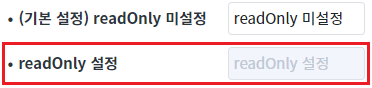
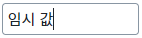
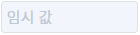
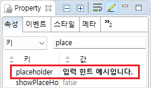

Input의 속성 'readOnly'와 함수 'setReadOnly' 예제입니다.
속성 'readOnly'는 입력 필드를 읽기 전용으로 설정하는 기능을 제공합니다. 'readOnly'가 true로 설정되면 사용자가 값을 수정할 수 없습니다.
함수 'setReadOnly'는 속성 'readOnly'의 값을 설정하는 기능을 제공합니다.
속성으로 'readOnly' 설정하기
스크립트로 'readOnly' 설정하기
STEP 1. 실행된 결과를 확인합니다.
예제 영역 [속성으로 'readOnly' 설정하기]의 Input을 확인합니다.
'readOnly'가 설정된 경우는 입력 필드를 수정할 수 없습니다.그림 1.브라우저(Chrome) 실행 예시

STEP 1. 초기 상태를 확인합니다.
예제 영역 [스크립트로 'readOnly' 설정하기]의 Input을 확인합니다.
'readOnly'가 설정되지 않은 상태로 입력 필드 수정이 가능합니다.그림 2.브라우저(Chrome) 실행 예시

STEP 2. 스크립트로 'readOnly'를 설정합니다.
버튼 'readOnly' 설정하기을 클릭합니다.STEP 3. 실행된 결과를 확인합니다.
입력 필드를 수정할 수 없습니다.
그림 3.브라우저(Chrome) 실행 예시

STEP 4. 스크립트로 'readOnly'를 해제합니다.
버튼 'readOnly' 해제하기을 클릭합니다.STEP 5. 실행된 결과를 확인합니다.
입력 필드를 수정할 수 있습니다.
그림 4.브라우저(Chrome) 실행 예시
Input의 속성을 정의합니다.
[필수] readOnly="true"
(옵션 설명)
true : 입력 필드를 읽기 전용으로 설정합니다.
false : [default] 입력 필드를 수정할 수 있습니다.
그림 5.웹스퀘어5 SP5 스튜디오의 Property View(속성창) 예시

소스 코드
<!-- Input 의 소스 본문 예시 --> <xf:input readOnly="true"> </xf:input>
스크립트를 작성합니다.
Input의 함수 'setReadOnly'를 이용하여 스크립트를 작성합니다. 세부 지정은 아래의 스크립트 예시에 작성되어 있습니다.
스크립트
//예제 파일에서는 스크립트 'scwin.btn_exam1_1_onclick'에 작성되어 있습니다. // Input 'ibx_exam1'의 속성 'readOnly'의 설정 값을 true로 지정합니다. 'readOnly'가 활성화됩니다. ibx_exam1.setReadOnly(true);
readOnly
setReadOnly( readOnly )
[웹스퀘어5 SP5 개발 가이드] InputBox
링크 : https://docs1.inswave.com/sp5_user_guide/8df43d1f59fab704#3f78e914466d2d7a